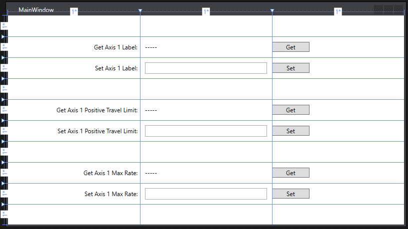
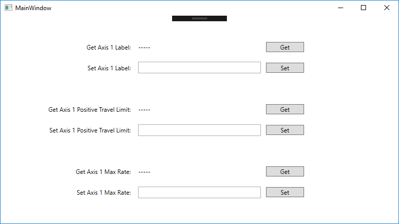
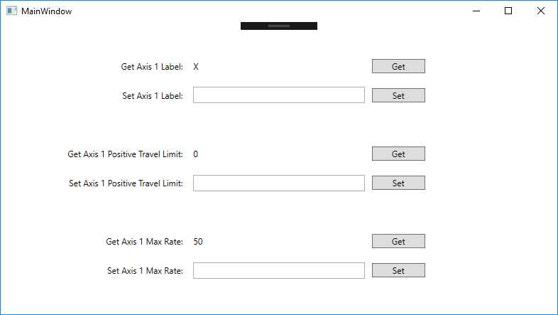
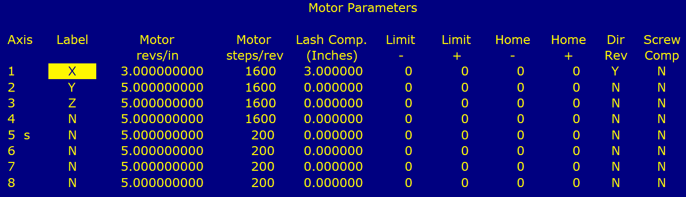
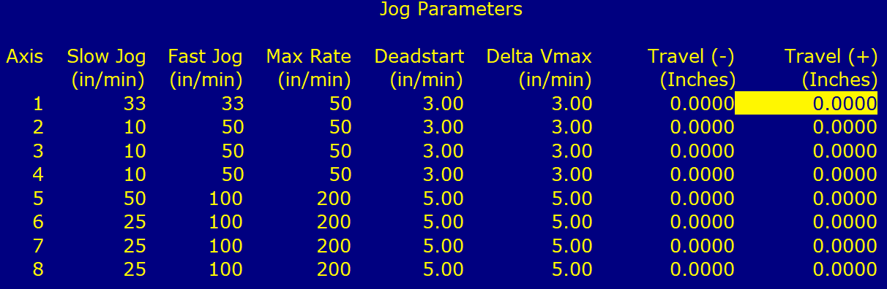
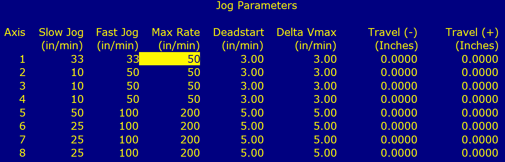
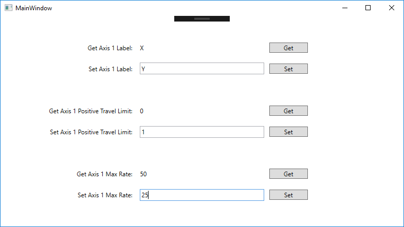
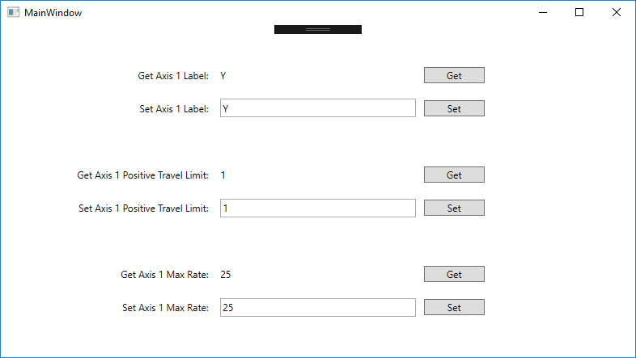

Prerequisites:
Designing Your MainWindow.xaml
Add Labels, TextBlocks, TextBoxes, and Buttons to your MainWindow.xaml to display the data to be received from, and sent to, CNC12. Your MainWindow should look something like this:

Here is the MainWindow.xaml code for the above picture:
<Window x:Class="GettingSomeAxisData.MainWindow"
xmlns="http://schemas.microsoft.com/winfx/2006/xaml/presentation"
xmlns:x="http://schemas.microsoft.com/winfx/2006/xaml"
xmlns:d="http://schemas.microsoft.com/expression/blend/2008"
xmlns:mc="http://schemas.openxmlformats.org/markup-compatibility/2006"
xmlns:local="clr-namespace:GettingSomeAxisData"
mc:Ignorable="d"
Title="MainWindow" Height="450" Width="800">
<Grid>
<Grid.RowDefinitions>
<RowDefinition/>
<RowDefinition/>
<RowDefinition/>
<RowDefinition/>
<RowDefinition/>
<RowDefinition/>
<RowDefinition/>
<RowDefinition/>
<RowDefinition/>
<RowDefinition/>
</Grid.RowDefinitions>
<Grid.ColumnDefinitions>
<ColumnDefinition/>
<ColumnDefinition/>
<ColumnDefinition/>
</Grid.ColumnDefinitions>
<Label Content="Get Axis 1 Label:" HorizontalAlignment="Right" Margin="10,0,0,0" VerticalAlignment="Center" Grid.Row="1"/>
<Label Content="Set Axis 1 Label:" HorizontalAlignment="Right" Margin="10,0,0,0" Grid.Row="2" VerticalAlignment="Center"/>
<Label Content="Get Axis 1 Positive Travel Limit:" HorizontalAlignment="Right" Margin="10,0,0,0" Grid.Row="4" VerticalAlignment="Center"/>
<Label Content="Set Axis 1 Positive Travel Limit:" HorizontalAlignment="Right" Margin="10,0,0,0" Grid.Row="5" VerticalAlignment="Center"/>
<Label Content="Get Axis 1 Max Rate:" HorizontalAlignment="Right" Margin="10,0,0,0" Grid.Row="7" VerticalAlignment="Center"/>
<Label Content="Set Axis 1 Max Rate:" HorizontalAlignment="Right" Margin="10,0,0,0" Grid.Row="8" VerticalAlignment="Center"/>
<TextBlock x:Name="TextBlockGetAxis1Label" Grid.Column="1" HorizontalAlignment="Left" Margin="10,0,0,0" Grid.Row="1" TextWrapping="Wrap" Text="-----" VerticalAlignment="Center"/>
<TextBlock x:Name="TextBlockAxis1TravelLimit" Grid.Column="1" HorizontalAlignment="Left" Margin="10,0,0,0" Grid.Row="4" TextWrapping="Wrap" Text="-----" VerticalAlignment="Center"/>
<TextBlock x:Name="TextBlockAxis1MaxRate" Grid.Column="1" HorizontalAlignment="Left" Margin="10,0,0,0" Grid.Row="7" TextWrapping="Wrap" Text="-----" VerticalAlignment="Center"/>
<Button x:Name="ButtonGetAxis1Label" Content="Get" Grid.Column="2" HorizontalAlignment="Left" Margin="0" Grid.Row="1" VerticalAlignment="Center" Width="75" Click="ButtonGetAxis1Label_Click"/>
<Button x:Name="ButtonSetAxis1Label" Content="Set" Grid.Column="2" HorizontalAlignment="Left" Margin="0" Grid.Row="2" VerticalAlignment="Center" Width="75" Click="ButtonSetAxis1Label_Click"/>
<Button x:Name="ButtonSetAxis1TravelLimit" Content="Set" Grid.Column="2" HorizontalAlignment="Left" Grid.Row="5" VerticalAlignment="Center" Width="75" Click="ButtonSetAxis1TravelLimit_Click"/>
<Button x:Name="ButtonGetAxis1MaxRate" Content="Get" Grid.Column="2" HorizontalAlignment="Left" Margin="0" Grid.Row="7" VerticalAlignment="Center" Width="75" Click="ButtonGetAxis1MaxRate_Click"/>
<Button x:Name="ButtonSetAxis1MaxRate" Content="Set" Grid.Column="2" HorizontalAlignment="Left" Margin="0" Grid.Row="8" VerticalAlignment="Center" Width="75" Click="ButtonSetAxis1MaxRate_Click"/>
<Button x:Name="ButtonGetAxis1TravelLimit" Content="Get" Grid.Column="2" HorizontalAlignment="Left" Grid.Row="4" VerticalAlignment="Center" Width="75" Click="ButtonGetAxis1TravelLimit_Click"/>
<TextBox x:Name="TextBoxSetAxis1Label" Grid.Column="1" Height="23" Grid.Row="2" TextWrapping="Wrap" VerticalAlignment="Center" Margin="10,0" VerticalContentAlignment="Center" MaxLength="1"/>
<TextBox x:Name="TextBoxSetAxis1TravelLimit" Grid.Column="1" Height="23" Grid.Row="5" TextWrapping="Wrap" VerticalAlignment="Center" Margin="10,0" VerticalContentAlignment="Center"/>
<TextBox x:Name="TextBoxSetAxis1MaxRate" Grid.Column="1" Height="23" Grid.Row="8" TextWrapping="Wrap" VerticalAlignment="Center" Margin="10,0" VerticalContentAlignment="Center"/>
</Grid>
</Window>
Here is the MainWindow.cs code for the above picture:
using System;
using System.Linq;
using System.Windows;
namespace GettingSomeAxisData
{
public partial class MainWindow : Window
{
private readonly string[] allowedAxisLabels = { "A", "B", "C", "N", "W", "X", "Y", "Z" };
public MainWindow()
{
InitializeComponent();
}
private void ButtonGetAxis1Label_Click(object sender, RoutedEventArgs e)
{
}
private void ButtonSetAxis1Label_Click(object sender, RoutedEventArgs e)
{
}
private void ButtonGetAxis1TravelLimit_Click(object sender, RoutedEventArgs e)
{
}
private void ButtonSetAxis1TravelLimit_Click(object sender, RoutedEventArgs e)
{
}
private void ButtonGetAxis1MaxRate_Click(object sender, RoutedEventArgs e)
{
}
private void ButtonSetAxis1MaxRate_Click(object sender, RoutedEventArgs e)
{
}
}
}
Class for getting and setting different system variables.
Definition CentroidApi.cs:19
ReturnCode
The possible return codes for api functions.
Definition CentroidApiReturnCode.cs:9
Definition APIPacket.cs:9
Checking For API Connection
A way to check to see if the api has been properly constructed is included in the library. It can be called by using the .IsConstructed() method on your cnc pipe object. In this example's case, it can be called with cnc12_pipe.IsConstructed().
The code below uses this method in combination with the MessageBox Class to display a pop up window informing the user that the api has not been constructed. Clicking "Yes" will attempt a reconnection, whereas clicking "No" will terminate the application.
public MainWindow()
{
InitializeComponent();
TextBoxSetAxis1Label.ToolTip = "Allowed Axis Labels: A, B, C, N, W, X, Y, and Z.";
var messageBoxText = "API is not connected. Would you like to retry connection?";
var messageBoxTitle = "API Connection Error!";
var messageBoxType = MessageBoxButton.YesNo;
while (!cnc12_pipe.IsConstructed())
{
MessageBoxResult selection = MessageBox.Show(messageBoxText, messageBoxTitle, messageBoxType);
switch(selection)
{
case MessageBoxResult.Yes:
break;
case MessageBoxResult.No:
Environment.Exit(0);
break;
}
}
}
Button Event Handlers
The code below holds the api functions used to get and set data from CNC12. These event handlers run when you click the Buttons in your MainWindow, and are auto-generated by Visual Studio if you double click the Buttons in your design.
private void ButtonGetAxis1Label_Click(object sender, RoutedEventArgs e)
{
returnCode = cnc12_pipe.axis.GetLabel(
CNCPipe.
Axes.AXIS_1, out
char label);
TextBlockGetAxis1Label.Text = label.ToString();
}
private void ButtonSetAxis1Label_Click(object sender, RoutedEventArgs e)
{
var label = TextBoxSetAxis1Label.Text;
if (allowedAxisLabels.Contains(label.ToUpper()))
{
returnCode = cnc12_pipe.axis.SetLabel(
CNCPipe.
Axes.AXIS_1, Convert.ToChar(label.ToUpper()));
}
else
{
MessageBox.Show("Invalid axis label!");
}
}
private void ButtonGetAxis1TravelLimit_Click(object sender, RoutedEventArgs e)
{
TextBlockAxis1TravelLimit.Text = travel_limit.ToString();
}
private void ButtonSetAxis1TravelLimit_Click(object sender, RoutedEventArgs e)
{
bool isValid = double.TryParse(TextBoxSetAxis1TravelLimit.Text, out double value);
if (isValid)
{
}
else
{
MessageBox.Show("Invalid value!");
}
}
private void ButtonGetAxis1MaxRate_Click(object sender, RoutedEventArgs e)
{
TextBlockAxis1MaxRate.Text = rate.ToString();
}
private void ButtonSetAxis1MaxRate_Click(object sender, RoutedEventArgs e)
{
bool isValid = double.TryParse(TextBoxSetAxis1MaxRate.Text, out double value);
if (isValid)
{
}
else
{
MessageBox.Show("Invalid value!");
}
}
Class for setting and getting axis info.
Definition CentroidApiAxis.cs:11
Direction
The direction of the axis value.
Definition CentroidApiAxis.cs:67
Rate
The rates at which jogging occurs.
Definition CentroidApiAxis.cs:16
Axes
A list of axes.
Definition CentroidApi.cs:24
Running The Program
In order to run your program, CNC12 must be finished initializing and running.
Press the green arrow (Or F5 key) in Visual Studio to run your program.
If CNC12 is running and the api connection has been established successfully, your program window will look like the below image. If you get the pop up that was set up previously, check to see if CNC12 is running, finished initializing, and error free.

Pressing all of the "Get" buttons should retrieve the relevant data from CNC12. In this example's case, the values below appear.

These values can be checked against the values in CNC12. The relevant menus can be accessed from the Main Menu by:
- Motor Parameters: F1 -> F3 -> F2 -> F2
- Jog Parameters: F1 -> F3 -> F2 -> F1



Next, type in the values below into the TextBoxes and click each "Set" button.

Click all of the "Get" buttons again, and the values that you set previously will appear.

You can check the menu locations above to verify the changes inside CNC12.